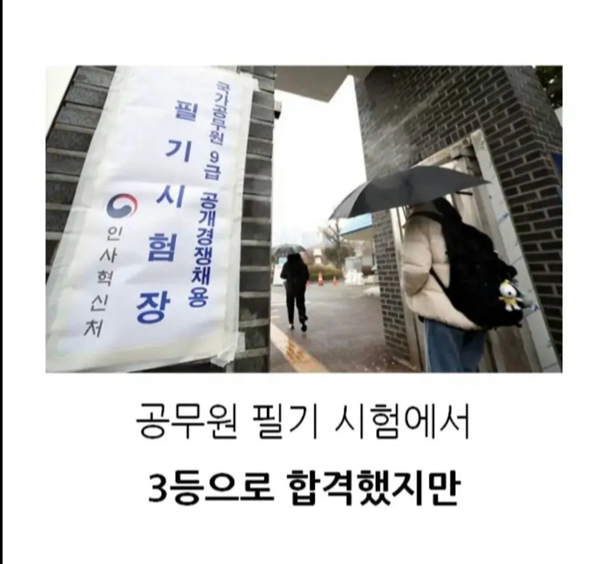
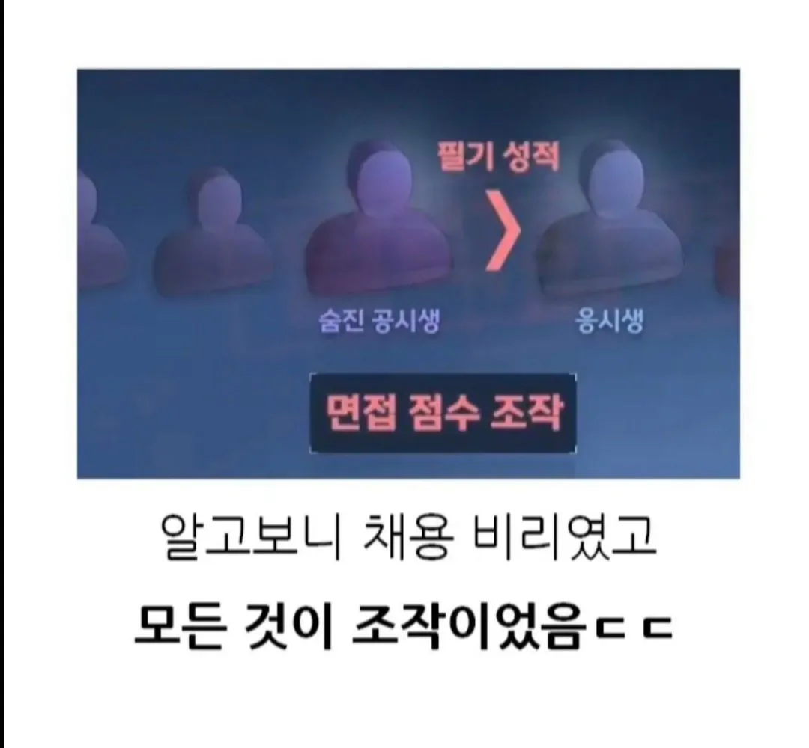
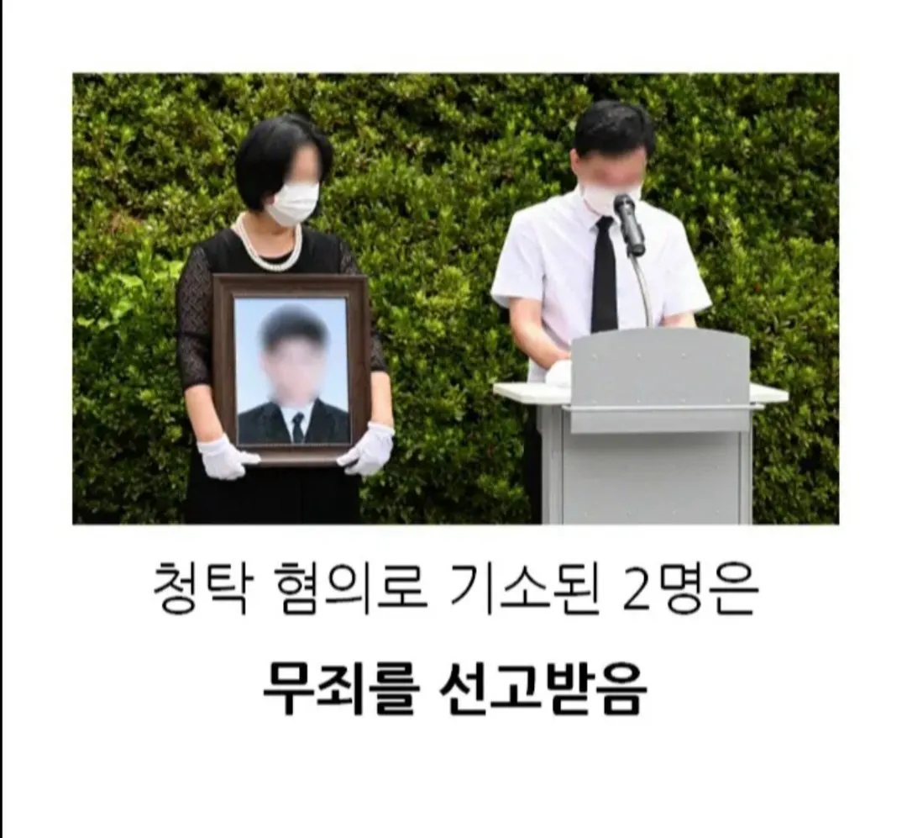

무죄 선고 이유가 뭔데?
우리가 남이가
그냥 한국은 무조건 뻔뻔해야됨 일단 철판깔고 아니면 말고
어떻게 필기 시험성적을 조작할수있지? 면접도 아니고
필기성적은 높았는데 면접점수 조작당해서 떨어진거임
아항
면접 점수임
ㄴㄴ 면접 점수 조작이었음 막짤보면 나옴
쓰는 핸드폰이 너무 작은가보네
유명한 사건인데 무죄 엔딩이네..
이게 지 사위 뽑을려고 면접 점수 바꿔서 저렇게 된거였나?
지난 2021년 부산시교육청 지방공무원 임용시험에서 불합격한 뒤 숨진 공시생.
면접조 5명 중에서 필기성적은 3등으로, 합격권이었지만 면접 우수자 2명이 나와 최종 4위로 불합격했습니다.
유족이 고소장을 제출하면서 수사가 시작됐고, 지난해 5월 교육청 직원 한 명이 면접 문제 유출 혐의로 징역 1년을 확정받았습니다.
이 과정에서 인사 청탁을 한 혐의로 기소된 부산시교육청 관계자 두 명에 대한 1심 선고가 오늘 부산지법에서 열렸습니다.
재판부는 면접 점수 조작 등 구체적인 범행 공모가 이뤄진 것으로 보기 어렵다며 이들에게 무죄를 선고했습니다.
재판부는 "검사가 제출한 증거만으로는 면접관이 피고인들과 공모해 문제를 유출했다고 인정하기 어렵다"며 "이들의 행위가 교육청 인사위원회의 직무 수행을 방해했다고 보기 어렵다"고 판결했습니다.
또 "면접 청탁 취지의 전화통화가 모두 57초에 불과해 범행을 공모할 시간적 여유가 없었다"고 봤습니다.
앞서 징역 1년이 확정된 행정직 직원에 대해서도 "재판부가 해당 직원의 단독범행으로 판시했다"고도 덧붙였습니다.
[피고인 관계자/음성변조 : "유족들에게는 죄송, 안타깝게 생각합니다."]
유족은 재판부가 수사 내용을 충분히 살펴보지 않았다며 검찰의 항소를 요청했습니다.
[이동현/공시생 유족 : "재판부에서 이 사건을 좀 더 면밀하게 검토를 했다면 이런 무죄 판결은 안 나왔으리라 확신합니다."]
한편 유족 측은 지난해 11월 면접 당시 면접 위원이었던 부산시청 공무원과 우정청 공무원 2명에 대한 재수사를 요구하는 진정서를 제출했습니다.
검새 판새 꼬라지 진짜
법이 그래 충이랑 판검사 욕을 하네 충이랑 안왔나?ㅋㅋㅋ
공탁전화는 1분내로 시발ㅋㅋ
오
대구라고 기억하고있었는데 부산이었네 나 왜 대구로 기억하고있었지
죄 다 끌러안고 징역 1년 간 사람은 나오면 대접받겠네 ㅋㅋ
1분 잘알겠습니다
평범한 한국이네
아니 어떻게 무죄를 석고받을수있지? 재판내용이 궁금하네
정작 저렇게 합격한사람은 의원면직했다며
지방공무원 꿀보직은 다 저런놈들이 들어감 ㅋㅋ
아파트 한채보다 평생 꿀보직 일자리 증여가 값진듯
꿀보직 일자리도 부모 힘 떨어지면 또 뺏기는거지 ㅋ
함무라비법으로 가자
이게 무죄라고? 관련자들 실명 까야되는데
형사사건은 검사운이 진짜 중요한게,
검사가 초임검사거나, 성의가 없거나, 실력이 없거나 해서
허술하게 기소하면
기소한 범죄혐의->해당혐의 유죄요건->해당 유죄요건 증빙증거
이렇게 세가지가 완전히 일치해야만 유죄나오고,
아무리 범죄 저지른게 맞고 증거가 넘쳐나도
기소한 범죄혐의랑 다른 범죄로 보여지거나 다른 범죄에 대한 증거면
응 그건 난 몰라, 기소한 혐의에 대해서 유죄요건에 해당하는 증거가 증빙 안됐어~
기소 구형문 수정제출 검사가 기한내에 안했으니 무죄임.
검사야 다음엔 공부 좀 더해서 와라 ㅉㅉ
이렇게 결론남... 진짜 판결문 읽어보면 황당한 경우가 많더라...
판사들도 일부러 판결문에 검사탓임 내탓아님 이라고 저렇게 둘러서 적어놓는 이유도
나도 얘네 유죄 맞는거 알지만 검사가 잘못한거임 내탓하지마, 이런 의미로 적어놓음.
공판때 눈치 주지않나 보통
응 맞아, 판사가 검사한테 피해자랑 면담해봤냐, 피해자가 올린 탄원서 읽어봤냐, 피해자가 추가 제출한 자료 검토해봤냐, 그거는 증거로 안올렸네? 이런식으로 눈치 충분히 주는데
경찰이나 수사관이 수사한 자료는 바로 증거로 올려도 잘 받아주는데 피해자가 만든 자료나 증거는 증거올리면 가해자 변호사가 편향된 증거라서 증거 거부합니다. 하면 거부되니깐
검사가 잘 다듬어서 올려야 되는데 자기가 맡은사건이 한두개가 아니니 그렇게까지 신경쓰고 공들여서 안하고 지금 내가 제출한 증거로도 충분하다! 이렇게 생각하는거지, 이정도 시험공부했으면 충분히 만점받는다! 다른 과목공부할거임! 이런거처럼...
그렇게 오만하게 있다가 무죄뜨고 커리어 조지는거지...
변론주의라지만 안타깝네
당사자주의
법이 더이상 평범한사람들을 보호해주지않고잇다.
얘들아 봤냐 ? 죽어봤자 아무도 억울함 안풀어줌 억울해서 죽겠다 싶으면 혼자 죽을 이유가 없다 이거야
그래서 저번에 인천에서..
시발 장난하냐 죽여버려야지 니가 왜죽어..
니가 왜 죽어 ㅜㅜ
배트맨이 필요한 나라
문제 유출한 사람이 유죄인걸 보면 문제 유출은 맞지만 검사가 공모한걸 처벌 해달라고 했는데 공모 했단 증거가 없으니 무죄 이런 느낌이네 상식적으로는 당연히 달라고 했으니 줬을거라 생각하고 줬단게 증명 됐으니 달라는것도 증명 된거나 마찬가지겠지만 법적으로 엄격하게 따지면 달란 소리 안했는데 잘 보이려고 스스로 알아서 했을 수도 있다 이런건가 봄 근데 그걸 어떻게 증명하냐 판사야
사실 이래서 형사사건이라고 검사 믿고 손놓고있지말고 변호사 선임해서 변호사한테 맡겨서 문제유출 고소, 문제 제공 고소, 문제 제공받음 고소, 문제 제공 제안함 고소, 문제제공 승락함고소, 공모고소, 이렇게 생각나는 모든 혐의로 각각 전부다 따로 고소하면 검사가 모든 내용 다 포함해서 공소장 써서 일부유죄라도 나올 확률이 올라감. 그리고 모든공판때 변호사가 직접가서 방청하고 보완서류 계속 판사랑 검사한테 제공하고 추가증거 신청하게 압박넣으면
유죄확률이 조금이라도 올라감.
어차피형사사건인데 뭐하러 변호사 선임하냐? 이러다가 가해자가 무죄받고 쪼개는거 보면 돈 1000만원이 하나도 안아까워짐.
대한민국 사람들 참 착해 진짜 보면
좋은곳가서 걱정없이 행복하길
부산교육청인가?
죽지말고 죽이자
돈준놈은 무죄라고?